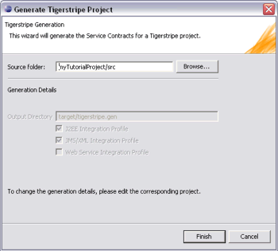

Once a Service Contract has been specified in a Tigerstripe project, the corresponding technology specific detailed profiles may be generated with Tigerstripe. In addition to the output of user-defined plugins, the generation may produce multiple separate specifications for the Service Contract depending on the selected target technologies. Tigerstripe supports all three integrations profiles that implement the OSS/J Design Guidelines through "built-in" generators:
Before any of these outputs can be generated, they need to be enabled and configured properly. The configuration is done through the Tigerstripe Descriptor. For more details on each of the Built-in Integration Profiles, please refer to the corresponding section below:
If you have been provided with a generator.zip file by another user, you can use to generate code, but you cannot edit or modify the rules that the generator contains. To deploy the generator in your workspace, simply place the .zip file in the Tigerstripe plug-ins directory - ECLIPSE_HOME\tigerstripe\plugins where ECLIPSE_HOME is the install directory of eclipse. The next time you open the Generate Wizard (see below), the new generator will be available for selection and configuration.
See the section Generator Design Tasks for more information on how to create a generator.
Once the selected plugins have been configured properly (see sections above), they may be generated by Tigerstripe, by triggering the generation on the project.
To do so, make sure the Tigerstripe Perspective is active.
Select the  Generate button from the toolbar. The following wizard appears:
Generate button from the toolbar. The following wizard appears:

Similarly to other Tigerstripe wizard, this wizard will present the target project to be generated by identifying the corresponding source folder. If no Tigerstripe project is in scope, this field will be left blank; please select a target project through the Browse button.
When the target project to generate has been identified, the wizard will show what Integration Profiles have been selected, and will be generated.
Press Finish to trigger the generation engine. To change the configuration of any of the integration profiles, please refer to the corresponding section mentioned above.
Note: before a project can be generated, all errors in this project must be fixed. If the project contains active Errors (see Auditor), Tigerstripe allows to continue and ignore errors. However, the generation is not guaranteed to succeed in that case.
© copyright 2005, 2006, 2007 Cisco Systems, Inc. - All rights reserved